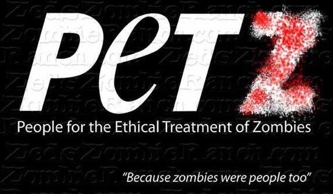

Examen de segundo parcial: Personas por la Ética en el Trato de los Zombis (PETZ)
Código de ética
"Apegándome al Código de Ética de los Estudiantes del Tecnológico de Monterrey, me comprometo a que mi actuación en esta actividad de evaluación esté regida por la honestidad académica. En congruencia con el mismo, realizaré esta actividad de forma honesta y personal, para reflejar a través de ella mis conocimientos y competencias."Información
El virus DAWBD te convierte en zombie y te acabas de contagiar. Una persona contagiada se convierte en Zombi DAWBD en 170 minutos, más vale tener el siguiente sistema listo para las 12:55pm para asegurarte que te traten considerando que alguna vez fuiste humano.
Modalidad
Individual.
Competencias a observar
- 3. Implementa sistemas de bases de datos que satisfacen requisitos de información y permiten la escalabilidad del sistema
- 5. Desarrolla aplicaciones web con interacción asíncrona con el servidor y que consumen servicios web
Instrucciones
-
Para observar el nivel mínimo de desarrollo de competencias esperado hasta este punto:
La organización denominada Personas por la Ética en el Trato de los Zombis (PETZ) requiere un sistema accesible desde Internet con una base de datos centralizada para llevar un registro de zombis. Con este registro, PETZ podrá darle seguimiento a los zombis para asegurarse que reciban un trato adecuado considerando que alguna vez fueron humanos.
La aplicación debe permitir 2 tipos de registro:
- 1. Nuevos zombis con su nombre completo.
- 2. El estado actual del zombi (infección, desorientación, violencia, desmayo, transformación), con su fecha y hora de registro del nuevo estado, de tal forma que sea posible tener el histórico de todos los estados por los que ha pasado un zombi. El usuario no debe ingresar la fecha y hora, la aplicación debe hacerlo de manera automática.
Además, el sitio debe tener una sección para mostrar las siguientes consultas:
- 1. Todos los registros de zombis con todas las actualizaciones de cada uno.
- 2. La cantidad total de zombis registrados, y la cantidad de zombis en cada estado.
- 3. Todos los registros de actualización de estado de zombis del más reciente al más antiguo por la fecha de su registro.
- 4. Los registros de zombis con el estado elegido por el usuario y la cantidad de ellos.
Debido a la política de transparencia y participación ciudadana, la aplicación debe permitir a cualquier persona hacer los registros y las consultas.
Para tu fortuna, Ellie (única persona inmune al virus DAWDB) implementó la interfaz del usuario, pero no le fue posible implementar el back-end por no haber realizado los laboratorios del segundo parcial. Su código está disponible en: https://bitbucket.org/ejuarez/the_last_of_us).
Nota 1: Recuerda que puedes manejar el guardado de las fechas y horas directamente con el motor de la base de datos, es decir, no necesitas un datepicker para manejar las fechas, ni generar la fecha desde php.
Nota 2: El examen es abierto, puedes consultar cualquier referencia (excepto comunicarte con tus compañeros).
-
Para obtener los grados más altos esperados en el desarrollo de competencias:
Idealmente, la aplicación debe ser una RIA (Rich Internet Application), es decir, las interacciones con el servidor deben ser asíncronas.
Idealmente las interacciones con la base de datos deben ser por medio de procedimientos almacenados.
Entregables por mensaje directo de slack a edjuarezp
1. URL de la aplicación funcionando en la web.
2. Enlace al repositorio de git. El repositorio debe incluir el script de la base de datos y todos los archivos de código.
assessment Evaluación
| Competencia | Nivel “Don't keep calm ... Run!” (Practicante) | Nivel “Let me eat your br-a-a-a-a-a-a-i-n-s” (Ing. Junior) | Nivel “Get that screwdriver out of my head!” (Ing. Senior) | Nivel “Zombies, they love you for what is on the inside” (Arquitecto) |
|---|---|---|---|---|
| 3. Implementa sistemas de bases de datos que satisfacen requisitos de información y permiten la escalabilidad del sistema | No hay evidencia de implementación de sistemas de bases de datos | Diseña un modelo de datos que atiende de manera parcial las necesidades de información de un sistema de cómputo. | Diseña un modelo de datos que atiende las necesidades de información de un sistema de cómputo considerando los posibles cambios que se presenten en el futuro. Es evidente el uso adecuado de consultas para la extracción de datos. | Diseña un modelo de datos que atiende las necesidades de información de un sistema de cómputo considerando los posibles cambios que se presenten en el futuro. Es evidente el uso adecuado de consultas para la extracción de datos. Hay técnicas de automatización para creación de estructuras de bases de datos, cargas masivas de datos y procedimientos almacenados. |
| 5. Desarrolla aplicaciones web con interacción asíncrona con el servidor y que consumen servicios web | No hay evidencia del desarrollo de una aplicación con comunicación entre un cliente y un servidor | Desarrolla aplicaciones web sencillas con un uso adecuado de las peticiones HTTP, manejo correcto de sesiones, estilo arquitectónico MVC e interacción con una base de datos con operaciones para crear, modificar y borrar datos, así como consultas complejas y un nivel básico de seguridad. | Desarrolla aplicaciones web enriquecidas con un uso adecuado de las peticiones HTTP, manejo correcto de sesiones, estilo arquitectónico MVC e interacción con una base de datos con operaciones para crear, modificar y borrar datos, así como consultas complejas, un nivel básico de seguridad e interacción asíncrona para las características usadas más frecuentemente. | Se evalúa hasta el periodo final. |